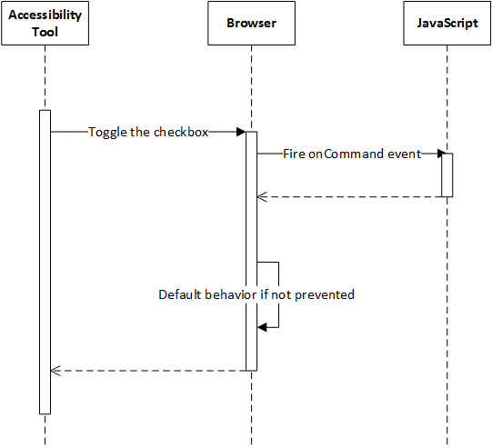

This document is a non-normative reference, which provides an overview of a set of User Intention Events that build on ARIA to extend accessibility functionality to complex, scripted web applications in use cases where markup-based solutions have proven impossible, difficult or costly to implement.
This document is a draft of a proposal to the w3c. Our hope is that it would be incorporated into the PF ARIA taskforce, DOM or WebApps work. It is an early draft and has no normative standing.
Web Accessibility Properties and Actions (WAPA) allows more direct communication between web applications and platform accessibility APIs. It includes three pieces
AT Request for Accessible node property via accessibility API
[Constructor(DOMString type, optional AriaRequestEventInit eventInitDict)]
interface AriaRequestEvent : Event {
readonly attribute DOMString attributeName;
attribute DOMString attributeValue;
};
dictionary AriaRequestEventInit : EventInit {
DOMString attributeName = null;
DOMString attributeValue = null;
};
AT Action taken by user
[Constructor(DOMString type, optional CommandEventInit eventInitDict)]
interface CommandEvent : Event {
readonly attribute DOMString commandType;
readonly attribute DOMString detail;
};
dictionary CommandEventInit : EventInit {
DOMString commandName = null;
DOMString detail = null;
};
Example: CommandTypes to UIA methods
| commandType | UIA method |
|---|---|
| Toggle | IToggleProvider::Toggle |
| Expand | IExpandCollapseProvider::Expand |
| collapse | IExpandCollapseProvider::Collapse |
| scrollIntoView | IScrollItemProvider::ScrollIntoView |
| Select | ISelectionItemProvider::Select |
| addToSelection | ISelectionItemProvider::AddToSelection |
| removeFromSelection | ISelectionItemProvider::RemoveFromSelection |
| setValue | IValueProvider::SetValue |
| scrollHorizontal | IScrollProvider::Scroll |
| scrollVertical | IScrollProvider::Scroll |
| setHorizontalScrollPercent | IScrollProvider::SetScrollPercent |
| setVerticalScrollPercent | IScrollProvider::SetScrollPercent |
It can be very costly to pre-load all the accessibility information and get it added to all the relevant elements, especially if no one will ever ask for it. For example, populating all the names with aria-label takes time to load all the strings and add them to the markup, or to download them as part of a static markup.
Imagine a list with 100 items. If an item is added or removed from the list, every other item must update their aria-setsize and (potentially) aria-posinset attributes.
The developer wants to provide accessibility information only when it is requested by AT via the Accessibility API, and not at the time the DOM is filled in.
This mechanism works with the @role attribute and any @aria- attribute.
<div id="listbox1" role="listbox" onariarequest="HandleRequest(event);">
<div role="listitem">Item 1</div>
<div role="listitem">Item 2</div>
<div role="listitem">Item 3</div>
…
<div role="listitem">Item 100</div>
</div>
<script>
function manageList(event) {
var listbox = document.getElementById('listbox1');
if (event.target.parentNode == listbox) {
if (event.attributeName === "posinset") {
event.attributeValue = GetChildId(event.target);
}
else if (event.attributeName === "setsize") {
event.attributeValue = "100";
}
}
}
</script>
TODO: Add another example with a different attributename
Use Case 2: Accessibility information Stored outside DOM
An application uses javascript objects to store all of its state (accessibility and other state), and only uses the DOM as a drawing surface. The goal is to treat accessibility state the same way as other state, and to manage it directly from script.
element.onariarequest is a new event that gets fired when an AT requests makes an Accessibility API request that maps to aria information
element.oncommand is a User Intention Event
TODO: update to match API naming changes in User Intention Events
event.attributeName is the attribute that changed as part of the event. This is a new attribute we are proposing to add to the DOM Event Object
event.preventDefault(); stops the default processing of the event.
element.NotifyAriaStateChange(string) toggles a boolean aria state. It is equivalent to element.setAttribute("aria-"+string, true) or element.setAttribute("aria-"+string, false)
TODO: what about non-bolean aria attributes?
NOTE: I'm not positive this is necessary. Thoughts?
JavaScript Sample
<script>
var toggleState = false;
function HandleRequest(event) {
var myCheckbox = document.getElementById("myDiv");
if (event.attributeName === "checked" && event.target === myCheckbox) {
event.attributeValue = (toggleState ? "true" : "false";
}
}
function HandleCommand(event) {
var myCheckbox = document.getElementById("myDiv");
if (event.target === myCheckbox && event.commandName === "toggle") {
toggleState = !toggleState;
UpdateUI();
event.preventDefault();
}
function ToggleMe(){
toggleState = !toggleState;
var myCheckbox = document.getElementById("myDiv");
myCheckbox.NotifyAriaStateChange("checked");
}
}
</script>
<div id="myDiv" role="checkbox" oncommand="HandleCommand(event)" onariarequest="HandleRequest(event);" onclick="ToggleMe();">
Double check calling syntax
Use Case 3: Virtualized Content
A user opens a large document in the Word web app. Word adds the first page or two to the DOM, but not the whole document. When the user reaches the end of the loaded portion of the document, more content is loaded.
How will a screen-reader user know:
- Position in the document
- Position within a list or table that spans document chunks
- When there is more content to load and when there is not
- When content has been loaded
- When there has been a network or other error preventing content loading
How will an AT product signal to the app that it needs to load more content?
How will an app let AT products know that more content is loading and that focus should not move out of the content container?
Not all content is in the DOM, or the DOM contains little actual meaning for the content (the DOM is just a view). Requiring that the information be available on the DOM objects is hard to impossible depending on the app. This is used by apps like Office Online, where the content is stored in the backend and only a specific view (such as the current page of a document) is actually available in the DOM.
JavaScript Sample
<script>
function HandleCommand(event) {
var myContainer = document.getElementById(" content");
if (event.target == myContainer && event.commandname == "contentLoaded" ) {
appendcontent(mycontainer);
event.preventdefault();
}
function handlecommand(event) {
var mycontainer=document.getElementById("content");
if (event.target == myContainer && event.commandname == "contentRequested" ) {
mycontainer.setattribute("aria-busy","true");
event.preventdefault();
}
function handlecommand(event) {
var mycontainer=document.getElementById("content");
if (event.target == myContainer && event.commandname == "contentTimeout" ) {
displayerror();
event.preventdefault(); />
}
function HandleCommand(event) {
var myContainer = document.getElementById("content");
if (event.target == myContainer && event.commandName == "contentEnd") {
//do Nothing
event.preventDefault();
}
</script>
<body>
<div id=toolbar>
<!-- some UI for the page, which is not virtualized -->
</div>
<!--
This area is the content of the page, only part of which is loaded.
More will be loaded when the user reaches the bottom of the page.
aria-async is a proposed new aria attribute that marks the area that
contains virtualized content
-->
<div id=content aria-async="true" oncommand="HandleCommand(event);">
<!-- the first 'chunk' of content. A page, a set of images, etc. -->
</div>
<div id=sidebar>
<!-- content which is not virtualized -->
</div>
</body>
aria-async is new aria-attribute which means that the content is may be virtualized.
TODO: Think about naming, and relationship with aria-busy and other live region features
Four new command events:
- ContentRequested is fired when the application makes a server call to get additional content. This will often be in response to the user reaching the end of the currently loaded content, but could be in response to custom UI.
- ContentLoaded is fired when the content has been returned from the server and added to the DOM.
- ContentTimeOut is fired after n time if no content is returned.
- ContentEnd is fired when the async call returns with no more content
How does the server indicate this? Is that something we need to define, or up to the app?
TODO: Add where the requestcontent comes from
Use Case 4: Custom Elements (Future)
A developer encapsulates functionality in a control that can be called using a custom element tag. Using DARIA, the developer can define default ARIA roles, states and properties, so that those will be mapped to UIA (and other accessibility APIs) in the same way that the default roles, states and properties of native HTML elements are mapped.
http://w3c.github.io/webcomponents/spec/custom/
WAPA allows more direct communication with accessibility APIS via script, including the ability to intercept accessibility API actions. We believe that this can be used to hook up custom elements to web accessibility APIs and allow AT products to interact with them.
Case 5: WebDriver testing of accessibility (Future)
Because (WAPA) is an in-browser javascript API, rather than a platform accessibility API, we may be able to simulate the effect of an AT acting on content by sending the same command events that the browser would send based on AT action. This would allow WebDriver to exercise accessibility functionality in web apps.
Relationship to Other work
Relationship to User Intention Events
WAPA is a set of User Intention Events. It builds on that work to hook into the accessibility layer, and has a dependency on that work.
A User Intention event will be fired whenever an action is taking place, such as toggling a checkbox, to allow authors to hook the action and perform any specific actions they need to, such as updating state and UI, with the option to prevent the default behavior (a simulated click, if applicable). For this, a new event will be added:
[Constructor(DOMString type, optional CommandEventInit eventInitDict)]
interface CommandEvent : Event {
readonly attribute DOMString commandName;
readonly attribute DOMString detail;
};
dictionary CommandEventInit : EventInit {
DOMString commandName = null;
DOMString detail = null;
};
The 'detail' payload part of this event is an extra piece of information defining the event, if necessary, such as the value for a SetValue command.
A User Intention event will fire whenever an AT invokes an action via the accessibility APIs:

Relationship to ARIA
WAPA is intended to extend the functionality of ARIA to situations where it will be easier or more performant to manage accessibility in script rather than in markup. It allows web authors to provide ARIA name-value pairs to the Accessibility API via javascript functions without the need for an element with those name-value pairs to be present in the document object.
Relationship to IndieUI
TODO